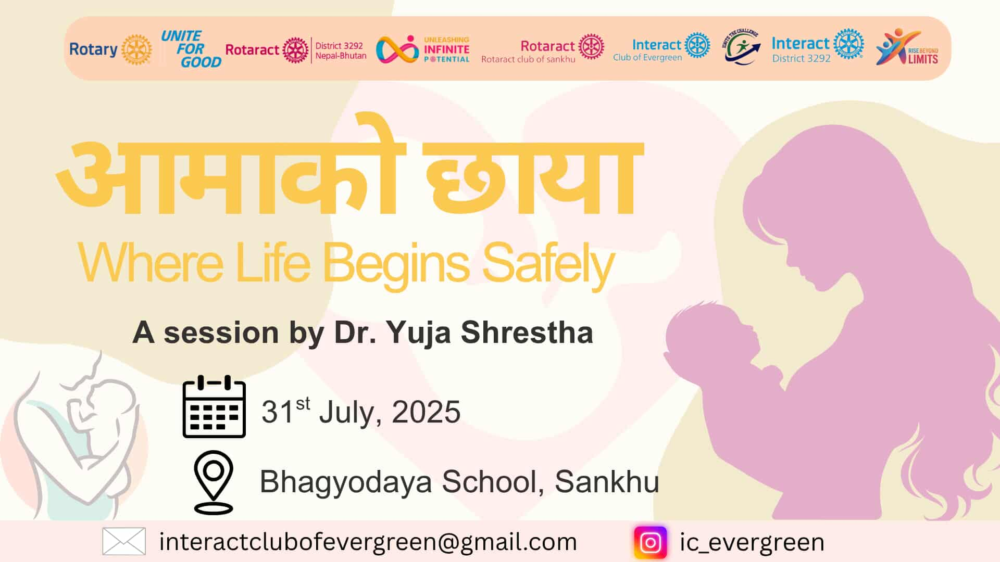

Aama Ko Chhaya — Maternal Health & Menstrual Sanitation Session
2026-07-31 · Bhagyodaya School
Session for 50 Class 10 students on maternal and infant health and menstrual hygiene, led by Dr. Yuja.
Full record
The Rotaract Club of Sankhu organized "Aama Ko Chhaya" on 31 July 2026 at Bhagyodaya School, a service project on maternal and infant health and menstrual sanitation. Around 50 students of Class 10 attended the session, led by Dr. Yuja, who spoke on maternal and infant health as well as the menstrual cycle and hygiene practices. The project aimed to help students understand these topics and maintain proper menstrual sanitation in daily life. Coordinated by Lipee Shrestha with 6 club members present and 2 Rotarians, the one-hour session contributed 6 volunteering hours at a total expense of NRs. 1,000.
aama-ko-chhaya-2026 · from sankhu_projects.sql